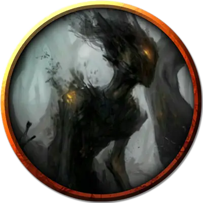

Гигантская тень
Hulking Shadow
Большая Нежить, без мировоззрения

Класс Доспеха 14 (природный доспех)
Хиты 133 (14к10 + 56)
Скорость 20 футов
| мод | спас | ||
|---|---|---|---|
| СИЛ | 20 | +5 | +5 |
| ЛОВ | 9 | −1 | −1 |
| ТЕЛ | 18 | +4 | +4 |
| мод | спас | ||
|---|---|---|---|
| ИНТ | 3 | −4 | −4 |
| МДР | 8 | −1 | −1 |
| ХАР | 1 | −5 | −5 |
Иммунитет к урону кислота, психическая энергия; дробящий, колющий, рубящий от немагических атак, кроме нанесённых адамантиновым оружием
Иммунитет к состояниям испуг, истощение, окаменение, отравление, очарование, паралич
Чувства пассивное Восприятие 9
Опасность 9 (5000 опыта)
Бонус мастерства +4
Особенности
Языки. понимает языки своего создателя, но не говорит
Поглощение кислоты. Каждый раз, когда тень должна получить урон кислотой, она не получает урон, и вместо этого восстанавливает число хитов, равное причиняемому урону кислотой.
Берсерк. Каждый раз, когда тень начинает ход с 60 или меньше хитами, бросайте к6. Если выпадет «6», тень становится берсерком. Будучи берсерком, она в каждом своём ходу атакует ближайшее видимое существо. Если поблизости нет существ, к которым можно подойти и атаковать, тень атакует предмет, предпочитая предметы с размером меньше своего. Став берсерком, тень остаётся им, пока её не уничтожат или пока она не восстановит все свои хиты.
Неизменяемая форма. Тень обладает иммунитетом ко всем заклинаниям и эффектам, изменяющим её форму.
Сопротивление магии. Тень совершает с преимуществом спасброски от заклинаний и прочих магических эффектов.
Магическое оружие. Атаки оружием тени являются магическими.
Действия
Мультиатака. Тень совершает два Размашистых удара.
Размашистый удар. . Рукопашная атака оружием: +8 к попаданию, досягаемость 5 фт., одна цель. Попадание: 16 (2к10 + 5) дробящего урона. Если цель — существо, она должна преуспеть в спасброске Телосложения Сл 15, иначе максимум её хитов уменьшится на количество, равное полученному урону. Цель умирает, если эта атака уменьшает максимум хитов до 0. Уменьшение длится до тех пор, пока не будет устранено заклинанием высшее восстановление [greater restoration] или подобной магией.
Спешка (перезарядка 5–6). До конца своего следующего хода тень магическим образом получает бонус +2 к КД, совершает с преимуществом спасброски Ловкости, и может использовать атаку Размашистым ударом бонусным действием.